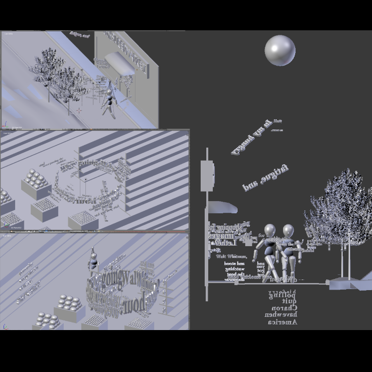
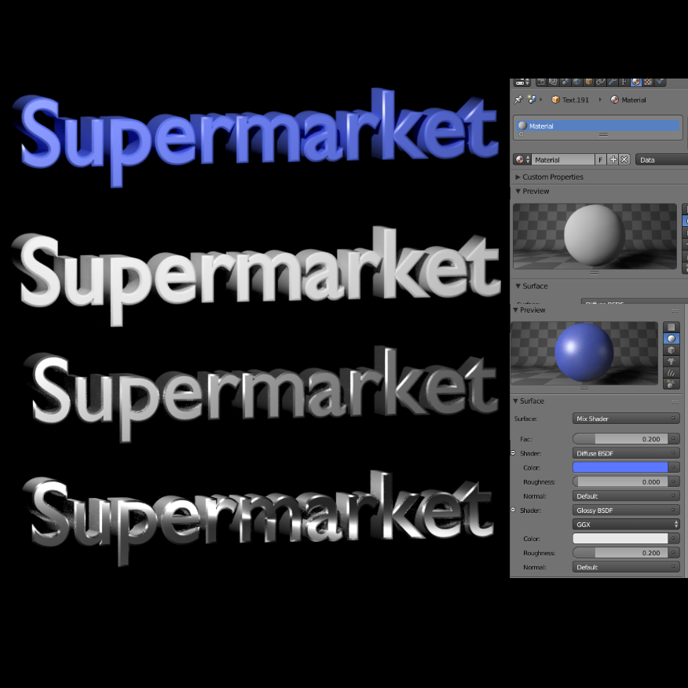

|
|
|
The art of creating and telling stories in a 360 degree, augmented or virtual reality enviornment is still quite new. Artists, filmmakers, and game designers are still just figuring it all out. There's a subtle balance to be had between utilizing the full space while also not loosing the viewer, directing the eye while also giving freedom to explore a new world. |
|
I was fascinated with the idea of using this new medium to display a poem, much like a lyric video. Working in Blender I modeled a world in which Allen Ginsberg's A Supermarket in California can come to life. I added text and animations and tested a variety of different versions on both on other students as well as adults less familiar with 360 videos. |
|
There were certain aspects of the final project that worked quite well, such as the overall enviornment and placing the text within the world, and others that require more experimentation and improvement. I chose to heavily direct the viewers gaze, rather than giving them the freedom of looking throughout the scene wherever they pleased. For some this seemed to work quite well, while others preferrred to ignore the poem entirely and simply look around. Overall though, this was a productive and moderatley successful introduction to a fascinating new field. |
|
|
|
Phase 1 of the project was simply creating
a short poem lyric video, learning how to use blender, how
to model and animate text.
I then went on to model the enviornments for the
final poem and learn how to render them properly and upload to
YouTube as 360 degree videos.
The original street scene had more enviornment
animation, specifically the trees blowing in the wind, but much
was later removed to speed up rendering.
The next step was to create a story board and
with that, an animatic so that the process of modeling, placing,
and animating the final text would go smoother.

Placing the text and figures in the scene was
made much easier with the storyboard to look back at.

I also learned how to use blender's texture and
node systems, both in making materials and later in rendering the
frames properly.
|